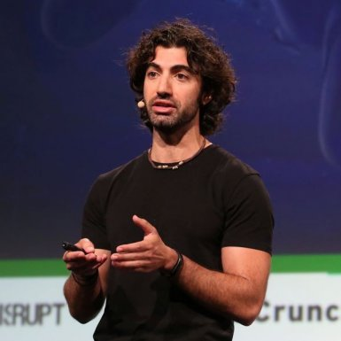
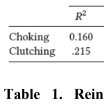
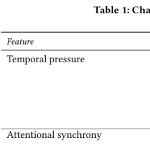
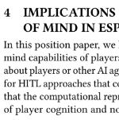
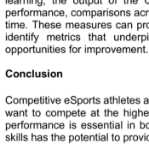
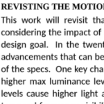
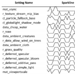
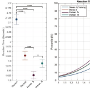
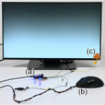
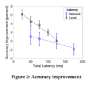

PROGRAM
EHPHCI Session 1: Introduction and Keynote (1300 - 1350)
Welcome & Keynote Introduction:
The organizers welcome authors and attendees to the workshop, and introduce the keynote speaker, Amine Issa.
(1300 - 1310)
Session co-chairs — Kim J, Spjut & Watson
The organizers welcome authors and attendees to the workshop, and introduce the keynote speaker, Amine Issa.
(1300 - 1310)
Session co-chairs — Kim J, Spjut & Watson

Keynote — Amine Issa:
Amine earned his doctorate at the Mayo Clinic researching the extremes of human performance, with his findings developed into technology for mobile health and remote monitoring. He played video games for decades, and competed professionally for a couple years. He found many broader lessons in performance that can be learned from the arena of esports. He channelled both his performance and gaming passions to found Mobalytics, a performance assessment and optimization platform for gamers.
(1310 - 1335)
Amine earned his doctorate at the Mayo Clinic researching the extremes of human performance, with his findings developed into technology for mobile health and remote monitoring. He played video games for decades, and competed professionally for a couple years. He found many broader lessons in performance that can be learned from the arena of esports. He channelled both his performance and gaming passions to found Mobalytics, a performance assessment and optimization platform for gamers.
(1310 - 1335)
Discussion:
Amine discusses his keynote with attendees.
(1335 - 1350)
Amine discusses his keynote with attendees.
(1335 - 1350)
EHPHCI Session 2: Players and Teamwork (1400 - 1450, videos)
Attendee introductions:
One third of attendees introduce themselves briefly.
(1400 - 1410)
Session co-chairs — Lee & Putrino
Introductions — Lee, Putrino, Borduas, Claypool, Daly, Kiefer, Klarkowski & Kleinman
One third of attendees introduce themselves briefly.
(1400 - 1410)
Session co-chairs — Lee & Putrino
Introductions — Lee, Putrino, Borduas, Claypool, Daly, Kiefer, Klarkowski & Kleinman

Paralysis by Analysis: Choking, Clutching, and Reinvestment in Competitive Gameplay
Nicole Beres, Madison Klarkowski and Regan Mandryk
(1410 - 1417, video)
Abstract: Video games frequently invoke high-pressure circumstances in which player performance is crucial. These high-pressure circumstances are incubators for ‘choking’ and ‘clutching’ — phenomena that broadly address critical failures and successes in performance, respectively....
Nicole Beres, Madison Klarkowski and Regan Mandryk
(1410 - 1417, video)
Abstract: Video games frequently invoke high-pressure circumstances in which player performance is crucial. These high-pressure circumstances are incubators for ‘choking’ and ‘clutching’ — phenomena that broadly address critical failures and successes in performance, respectively....

Esports and Domain General Research for High Performance Teams
Jason G. Reitman and Constance Steinkuehler
(1417 - 1424, video)
Abstract: Through our work studying team communication and awareness under stress in elite and developing esports teams, we are building a foundation for testing the generalizability of findings between similar teams in disparate domains....
Jason G. Reitman and Constance Steinkuehler
(1417 - 1424, video)
Abstract: Through our work studying team communication and awareness under stress in elite and developing esports teams, we are building a foundation for testing the generalizability of findings between similar teams in disparate domains....

Esports Agents with a Theory of Mind: Towards Better Engagement, Education, and Engineering
Murtuza N. Shergadwala and Magy Seif El-Nasr
(1424 - 1431, video)
Abstract: The role of AI in esports is shifting from leveraging games as a testbed for improving AI algorithms to addressing the needs of the esports players such as enhancing their gaming experience, esports skills, and providing coaching.....
Murtuza N. Shergadwala and Magy Seif El-Nasr
(1424 - 1431, video)
Abstract: The role of AI in esports is shifting from leveraging games as a testbed for improving AI algorithms to addressing the needs of the esports players such as enhancing their gaming experience, esports skills, and providing coaching.....

Using Data to "Git Gud": A Push for a Player-Centric approach to the Use of Data in Esports
Erica Kleinman and Magy Seif El-Nasr
(1431 - 1438, video)
Abstract: The rapid increase in the availability of player data and the advancement of player modeling technologies have resulted in an abundance of data driven systems for the domain of esports, both within academia and the industry. However, there is a notable lack....
Erica Kleinman and Magy Seif El-Nasr
(1431 - 1438, video)
Abstract: The rapid increase in the availability of player data and the advancement of player modeling technologies have resulted in an abundance of data driven systems for the domain of esports, both within academia and the industry. However, there is a notable lack....
Discussion:
The session's authors take and discuss questions as a single panel.
(1438 - 1450)
The session's authors take and discuss questions as a single panel.
(1438 - 1450)
EHPHCI Session 3: Perception (1500 - 1550, videos)
Attendee introductions:
(1500 - 1510)
Session co-chairs — Kim J & Watson
Introductions — Kim J, Watson, Listman, Liu, Madhusudan, Park, Reitman & Saul
(1500 - 1510)
Session co-chairs — Kim J & Watson
Introductions — Kim J, Watson, Listman, Liu, Madhusudan, Park, Reitman & Saul

From Traditional Sport to eSports: Leveraging Perceptual Research to Accelerate Skill Development
Adam W. Kiefer, Ryan P. MacPherson and Derek Panchuk
(1510 - 1517, video)
Abstract: As in traditional sport, proficient decision making is fundamental to successful eSport performance. Specifically, the assessment and targeting of mechanisms underlying the decision making process are of central importance....
Adam W. Kiefer, Ryan P. MacPherson and Derek Panchuk
(1510 - 1517, video)
Abstract: As in traditional sport, proficient decision making is fundamental to successful eSport performance. Specifically, the assessment and targeting of mechanisms underlying the decision making process are of central importance....

Revisiting the Perceived Motion Model that Predicted 360 fps Displays
Scott Daly
(1517 - 1524, video)
Abstract: A previous model of motion perception used in engineering display and signal format design predicted the need for a 360 FPS (frames per second) and 1080-line display and image signal format system, in order to match the viewing of reality. Now that 360 FPS gaming monitors are on the market, the model is revisited with twenty years of new studies, display technology advancements such as HDR ....
Scott Daly
(1517 - 1524, video)
Abstract: A previous model of motion perception used in engineering display and signal format design predicted the need for a 360 FPS (frames per second) and 1080-line display and image signal format system, in order to match the viewing of reality. Now that 360 FPS gaming monitors are on the market, the model is revisited with twenty years of new studies, display technology advancements such as HDR ....

Better Frame Rates or Better Visuals? An Early Report of Player Practice in Esports
Arjun Madhusudan and Benjamin Watson
(1524 - 1531, video)
Abstract: Esports athletes often reduce visual quality to improve latency and frame rate, and increase their in-game performance. While limited research has examined the effects of this visuo-spatial tradeoff on performance, we could find no work studying how widespread....
Arjun Madhusudan and Benjamin Watson
(1524 - 1531, video)
Abstract: Esports athletes often reduce visual quality to improve latency and frame rate, and increase their in-game performance. While limited research has examined the effects of this visuo-spatial tradeoff on performance, we could find no work studying how widespread....

Benefits of Immersive Spatial Audio on Athlete Reaction Times in E-sports
Alex Brandmeyer, Nathan Swedlow and Poppy Crum
(1531 - 1538, video)
Abstract: Recreational gaming and competitive e-sports represent a highly significant and growing sector of the home entertainment market. As the underlying technologies (consoles, PCs) that support gaming have scaled in capacity (e.g. CPU, GPU, RAM, DSP, controllers/interfaces, display technologies, etc.), game developers have been able to leverage this increased capacity to create richer worlds....
Alex Brandmeyer, Nathan Swedlow and Poppy Crum
(1531 - 1538, video)
Abstract: Recreational gaming and competitive e-sports represent a highly significant and growing sector of the home entertainment market. As the underlying technologies (consoles, PCs) that support gaming have scaled in capacity (e.g. CPU, GPU, RAM, DSP, controllers/interfaces, display technologies, etc.), game developers have been able to leverage this increased capacity to create richer worlds....
Discussion:
The session's authors take and discuss questions as a single panel. (1538 - 1550)
The session's authors take and discuss questions as a single panel. (1538 - 1550)
EHPHCI Session 4: Latency (1600 - 1650, videos)
Attendee introductions:
(1600 - 1610)
Session co-chairs — Kim S & Listman
Introductions — Kim S, Listman, Schmid, Seif El-Nasr, Shergadwala, Spjut, Swedlow, Akhillesh, Wimmer... and anyone we left out!
(1600 - 1610)
Session co-chairs — Kim S & Listman
Introductions — Kim S, Listman, Schmid, Seif El-Nasr, Shergadwala, Spjut, Swedlow, Akhillesh, Wimmer... and anyone we left out!

Yet Another Latency Measuring Device
Andreas Schmid and Raphael Wimmer
(1610 - 1617, video)
Abstract: End-to-end latency — the time a computer system needs from an input event until output is displayed — directly influences task difficulty and user experience. It is therefore an important topic in HCI research. Different human-computer interfaces require different....
Andreas Schmid and Raphael Wimmer
(1610 - 1617, video)
Abstract: End-to-end latency — the time a computer system needs from an input event until output is displayed — directly influences task difficulty and user experience. It is therefore an important topic in HCI research. Different human-computer interfaces require different....

Comparing the Effects of Network Latency versus Local Latency on Competitive First Person Shooter Game Players
Shengmei Liu, Mark Claypool, Atsuo Kuwahara, James Scovell and Jamie Sherman
(1617 - 1624, video)
Abstract: Competitive gamers, and especially esports gamers, want lower latency to improve their chances of winning. There are mainly two sources of latency – local system latency and network latency. While researchers have studied the effects of both, a direct comparison....
Shengmei Liu, Mark Claypool, Atsuo Kuwahara, James Scovell and Jamie Sherman
(1617 - 1624, video)
Abstract: Competitive gamers, and especially esports gamers, want lower latency to improve their chances of winning. There are mainly two sources of latency – local system latency and network latency. While researchers have studied the effects of both, a direct comparison....

A Case Study of First Person Aiming at Low Latency for Esports
Josef Spjut, Ben Boudaoud and Joohwan Kim
(1624 - 1632, video)
Abstract: Lower computer system input-to-output latency substantially reduces many task completion times. In fact, literature shows that reduction in targeting task completion time from decreased latency often exceeds the decrease in latency alone. However, for aiming....
Josef Spjut, Ben Boudaoud and Joohwan Kim
(1624 - 1632, video)
Abstract: Lower computer system input-to-output latency substantially reduces many task completion times. In fact, literature shows that reduction in targeting task completion time from decreased latency often exceeds the decrease in latency alone. However, for aiming....
Discussion:
The session's authors take and discuss questions as a single panel.
(1632 - 1644)
The session's authors take and discuss questions as a single panel.
(1632 - 1644)
Formal closing:
The organizers end the formal part of the EHPHCI program, and introduce the informal part.
(1644 - 1650)
The organizers end the formal part of the EHPHCI program, and introduce the informal part.
(1644 - 1650)
EHPHCI Session 5: Gameplay and Informal Discussion (1700 - 1750)
Informal time:
Attendees get to know one another a bit by moving from the official ACM CHI platform to Discord video breakouts and online games. Feel free to eat and drink!
Attendees get to know one another a bit by moving from the official ACM CHI platform to Discord video breakouts and online games. Feel free to eat and drink!